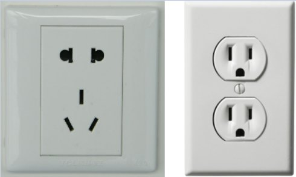

一个中国人的反省北京被大水淹了。在为逝去的生命感到惋惜之余，是全体中国人该反省的时候了。一次次的人为灾难之后，有人指责政府部门，指责各种外部因素。可是我觉得应该指责的，其实是我们自己。是的，我们，每一个中国人，不管是在国内还是在海外，不管你觉得自己多么的聪明，正直和高尚。 正视这个现实吧中国人，我们正在沦为世界上最低劣的民族之一。国内的中国人活着是靠运气，国外的中国人则是苟且偷生。问问我们自己，我们还有自己的尊严， 自己的原则，自己的道德，自己的智慧吗？我们还有什么值得世界上的人尊敬吗？如果给我们一个机会重新建立一个国家，我们有足够的智慧和力量让它的发展轨迹 跟现在的这个国家不一样吗？这个国家存在的腐败和各种不合理现象，难道是少数人就可以造成的结果吗？如果大多数人都知道什么是对的，并且坚持自己认为正确 的原则，这个国家难道会因为少数人的败坏而变成这个样子吗？所以其实这里的原因在于我们每个人自己，在于我们每个人心里存在的卑劣，愚昧和无知，在于我们 从小受到的教育。 对，这些人里面当然也包括我。不然的话我不会察觉到自己心里存在的这些问题。我检查自己，我对照别人，我发现问题，我改进自己。这些问题，可比我研究的学 术问题全都要高难很多。在某种程度上，它们比所有的科学问题都要困难和重要。现在我就我们中国人存在的一些问题提出一些粗略的看法吧。这些问题是如此之复 杂，这篇文章恐怕难以圆满的表达。我以后肯定还会有所修改。 对自己不负责其实，社会的问题也可以用理性的，类似计算机科学的思维来看待。社会就像一个机器，这个机器里每一个系统和元件必须协调，这个系统才能正常的工 作。否则这个机器就会越来越慢，浪费越来越多的资源，以至于到最后崩溃掉。所以虽然我对社会了解不多，我对这些现象的分析，比起社会学家可能还会有些独到 之处。 对自己负责，简而言之就是“自己的事情自己做”，也就是独立。可惜的是这个看似小儿科的问题，却是中国人（包括我）身上最缺乏的基本意识。然而这 个问题却很难察觉到，以至于你对它视而不见。从计算机的角度来看，“对自己负责”就是“Unix哲学”的第一条原则：每个程序只做一件事情，并且把它做 好。可是我发现，很多中国人其实连自己最起码的事情都做不好。 中国人有很强的依赖性。自己的事情自己不管理好，到头来却怪到别人头上，或者拖累别人。中国人有句俗话，“在家靠父母，出门靠朋友。”在家依赖父母，其实是这整个问题的根源，这个我稍后再说。出门靠朋友，则会带来更大程度上的社会问题。这是怎么回事呢？就拿我在美国见到过的一些中国同学作为例子吧。
这也许就是国外的中国留学生所谓的“出门靠朋友”。可是这种错误真的很难认识到，因为这种对自己不负责的态度，在很多国人的身上已经根深蒂固。从小就依赖 父母帮自己做这做那的，将来就把这些事情都推到朋友身上呗。在国外遇到的中国人，很多是这个样子，以至于我都怕了。很多美国人不愿意跟中国人交往，也是这 个原因。在这方面，我不得不承认美国人做得比我们好很多。做生活的强者，自己的事情自己处理，自己的麻烦自己解决。 这并不是给我们一个理由不去帮助那些真正需要帮助的人，而是说帮助别人不应该超越一定的界限。每个人都应该尽力处理自己应该做的那些事情，而不应该把这些 力所能及的事情推给别人。这是很简单的道理，如果每个人都来麻烦你去做他们自己的事情，你自己的事情怎么办？拿去麻烦别人？这种扯不清的关系，就是为什么 中国人的社会存在各种各样的矛盾和问题。父母和子女的关系，亲戚朋友的关系，婆媳关系，生意关系…… 里面存在的问题，很多时候都是因为这种依赖性，期望别人来做自己的事情，所产生的。这也在很大程度上导致了社会的冷漠和缺乏互相帮助。你好心帮助一个需要 帮助的人，可是这个人到后来就賴上你了，什么事都来找你，所以你后来就懒得帮助别人了。中国人越来越缺乏见义勇为，也是这个道理。你帮助一个可怜的人，到 头来他却诬告说是你把他弄成那样的。 对社会不负责一个人不仅要负担起对自己的责任，还要负担起社会的一小部分责任。中国社会最模糊最扯不清楚的，就是人与人之间的责任界限。责任分明，白底黑字写清楚，往 往被很多人认为是“不哥们”，“不亲热”。可是分不清责任，出了问题互相踢皮球，却是中国人社会生活里的大问题。想一想动车事故，想一想北京的水灾，想一 想最近南航飞机着火…… 看见了吗？有谁主动的承认，并且承担起自己的那份责任呢？这是政府的问题，各种机构的问题，也是全体中国人的问题。 问一问自己，当发生了跟自己有关事情的时候，你有主动承担自己的那份责任吗，还是喜欢把责任一股脑推给别人？我不得不承认，我自己就做过这样的事情。勇于 承担责任，貌似是每个中国人的弱点。“大丈夫一人做事一人当”，可是现在中国人有几个可以做到呢？街坊邻居，亲戚朋友，生意伙伴之间，经常是有福同享，有 难却不同当。有了问题就翻脸不认人，推卸责任，颠倒黑白的行为，在我们自己的生活中难道不常见吗？自己都做不到主动承担责任，出了大事故，恐怕也就不能都 怨政府和公司。因为这些官员也是中国人，跟我们一样的，不负责的人。为什么中国有这么多的贪官和腐败分子？他们身上的邪恶，其实来自于我们每一个中国人。 如果我们不能在从小的教育里学会这些做人的基本原则，中国人恐怕就只有永远落后下去，甚至成为亡国奴。 吝啬和贪婪中国人常说“付出总有回报”，事实却不是这样。究其原因，很多时候来自于我们的吝啬。我们没有明白，每一次收获，其实都需要我们付出。我们总是想收获却不想付出，这显然是不可能的。吝啬和贪婪，却几乎总是相互依存的。在某种意义上它们其实是同义词。 中国人太爱“省钱”了。“勤俭节约”是中国的光荣传统，但是很多人没有意识到，这其实很多时候是吝啬和贪婪披着“节约”的大衣。就像之前提到的情况，很少 的钱就能办到的事情，却想把那些钱省下来，结果搞得自己很猥琐。中国人对于钱的“多少”，貌似有非常扭曲的概念，付出再少的钱他也觉得太多。以至于中国人 在国外为了省钱，会作出其它各种各样奇怪的事情。其实博士生一个月工资足够住好吃好，可是还是很多人把自己搞得很狼狈。用的吃的玩的，全都买最次的，不知 道为什么。很多人为了省钱，手机是合伙开的“family plan”。收账算钱的那些麻烦事，还真是不值得省下来那点钱。吝啬，在很多时候造成了中国人对别人的“依赖”。本来花一点钱就可以得到专业的服务，却总 是为了省钱去麻烦自己的朋友。友情都被这吝啬的性格给磨灭了。 国内这种情况就更常见了。之前我回国一趟，发现真的很难适应现在国内的环境。花钱买不到等值的东西和服务，所有的商人和服务提供者都吝啬到家了。舍不得一 点点钱来改善自己的服务环境，本来该有的设施和设备都没有。快递送货用摩托车，东西都往地上掉，如果自己不开包检查，东西坏了商家不负责。卖电器的公司送 货的卡车居然是敞篷的，一下雨电器都被淋湿了，客户发现了问题又得扯皮。为了一点钱就以次充好，服务也是能拖延就拖延，能逃脱就逃脱。旅游景点什么东西都 卖天价，人造景点泛滥成灾，以至于现在国内所谓旅游，基本上都是扯淡。其它的毒牛奶，健美猪，…… 这些怪事，恐怕是几十年前也没有见过的。中国人道德的空前败坏，跟这种吝啬是非常有关系的。 吝啬和贪婪到了政府部门，就变成了腐败。城市乱建，各种道路房屋建筑设施都用劣质产品和原料，导致人为灾难不断。省下来的钱呢？自己吃回扣放腰包里了。然 而在对这些腐败分子深恶痛绝的同时，我们却没有发现，其实这一切罪恶的根源，都是出自我们自己的吝啬和贪婪。中国人真的应该学会什么叫做“付出”了。并且 反省一下，我们教给下一代的最重要的东西应该是什么。 华而不实然而在能显示自己身份和“格调”的方面，中国人却是非常大方的。中国的“奢侈品”卖的之贵，可能世界上都罕见。而这些所谓的“奢侈品”，很多不过是美国摆在超市货架上卖的日常用品，造价也不贵。中国人装修房子都讲求格调，喜欢搞一些高档的地砖，木地板，……却不重视产品安全。很多装修材料都含有对人体有害的物质，其实还不如最便宜的材料。 有一次在朋友家暂住。洗澡的时候，浴室的玻璃门卡住了。我使劲一拉把手，结果整个玻璃门轰的一声全碎掉了，扎伤手脚多处。其实美国人的浴室根本没有这些看 似豪华的装饰。一般就是一个浴缸加一个浴帘，浴室里除了镜子和灯泡根本没有玻璃。美国人缺那点钱装修吗？可是他们更加智慧，他们确实的知道什么东西是好 的，什么是不好的，至少在这些“非高科技”的领域是这样。 缺乏理性思想以上只是美国人聪明的一个很小的表现。如果我现在说美国是比中国设计更好的国家，恐怕一群“爱国者”就会开始唾骂我。这就像如果我说某种操作系统或者程序 语言比另外一种好的时候一样。我们没有意识到，这些操作系统，程序语言，以至于国家，其实都是“东西”。它们的地位是低于人的，并不是被膜拜起来的神物。 它们是需要科学和理性来设计和改造的，而不是什么什么“主义”就可以搞得好的。 对于美国社会生活设计上的科学性，我却是有很深体会的。大的地方（比如法律）另外再说，可是你没有想到，美国人这种科学和理性设计，其实已经到了最简单的电源插座。比如，下图就是中美两国的常见的家居电源插座的对比。左边是中国的标准插座，右边是美国的。  你看出来什么区别了吗？美国插座的插孔都是同一个样子的：平行的两个孔，大的是火线，小的是零线，第三个孔是地线。这样的设计有什么好处呢？首先，两脚的 插头也可以插进任何一个插孔里，而不只是能插进专门的两脚插孔。中国的三脚插孔，有什么道理设计成那个样子吗？没有。这种角度的插孔，会让两脚插头都插不 进去，而三脚的插头却是非常少见的。它们一般只存在于有金属外壳的电器，比如微波炉，洗衣机，等等。仔细观察你的卧室，有多少电器是需要三脚插座的呢？可 是中国插座的这种设计，却被放到了整个家居，包括卧室里。而中国的两脚插座，却是不安全的。因为电灯的插座一般是两脚的，而中国插座的火线和零线大小是一 样的，可以互换，所以你不能确保暴露的电极是在零线上。而美国电灯的插头却是一大一小两个插脚，所以火线和零线的插脚不可能互换，插进错误的插孔里。 这个算是美国人更聪明一些，但是中国的设计并不是完全的失败。但是中国的建设有另外一些却是明显的设计失误，却完全没有人注意到，比如：
还有很多这样的例子，我以后想起来可能还会补充。这些“设计失误”的背后，当然也免不了腐败的原因。但是我不觉得如果消灭了腐败现象，中国就会得到合理的 建设。我们需要真正的懂得城市规划，建筑设计，各种各样的人性化的设计专家。他们必须接受最好的专业培养。这是一个科学的问题，而不是一个道德的问题。 个人素质中国人总是以自己有“五千年的文明”而自豪。可是我们的“文明”在哪里？人们见面基本的礼貌和尊重，社会的各种秩序，这些方面我都看不到中国有什么文明，甚至比起几十年前更加落后了。 在美国，人们见面都会主动的问好。虽然并不是每个人都关心你，可是他们总会说一句“How are you？”他们在音乐厅，在电影院或者别的什么地方，坐到你旁边的时候总是会友好的打个招呼。如果他们在超市的过道上，需要从你身边一米以内的地方经过，他们会对你友好的说“excuse me”。如果两个车子同时到达没有红绿灯的路口（路口有四方向的“STOP”标志），往往有人会友好的挥手，示意另外一个车先走…… 久而久之，你就发现这些礼节成为了社会不可缺少的一部分，以至于回到国内会非常的不适应。人们擦肩而过时，那种急匆匆，怒目相向的表情。在超市推着车子从 你身边擦过，连句“注意”都不会说一声，甚至碰到你都不说声“对不起”。当你在等行人的绿灯的时候，旁边的人一窝蜂的横穿马路。还有插队，挤公车，抢车 道…… 这些事情，以前在国内似乎习以为常的，现在却非常难以接受了。我不得不说，美国人在很大程度上教育了在美国的中国人。至少，他们变得更加有礼貌，更加懂得 尊重他人。 但是我要说的另外一点是，这不只是一个礼貌的问题，这是一个社会能否有效运转的科学问题。如果中国开车族都不抢车道，行人都不乱穿马路，那么交通拥挤的现象就能在很大程度上得到改善，交通事故也会减少。如果人们都自觉排队，那么服务业就会更加高效。 这些确实是很难实现的。因为整个社会都是这个样子，如果只有少数的人做到这些，几乎是不起作用的。但是每个人都从自己做起，却是唯一有效的办法，虽然这在 某些时候会给自己带来不便。比如你不去挤公车你可能就坐不上公车，但是如果我们自己不尽力这样去做，这个社会就会越来越混乱，效率就会越来越低，中国就永 远也不会达到文明。这些素质，都不是学校教育能够改善的，而是父母传下来的。所以在做好自己的同时，我们还需要教育下一代，让他们也有礼貌，遵守秩序。 空洞的法律中国其实不是一个法治的国家。中国的立法人员，恐怕并不懂得什么是法律和法制。如果把理想的法律看成是一个程序，那么我们运行这个程序，就可以知道谁对谁 错，就知道该如何判决。美国的法律，在很大程度上是这样的设计。虽然美国法律在某些大的问题上有漏洞（比如医疗保险），但是在处理普通的内部事务的时候 （比如财产纠纷），却是非常有效的。每一个细小的概念，都有精确的定义，以至于到了需要判断的问题，很容易就解决了。美国人做事都是按部就班的，因为法律 说了算，法律要求有这些手续，那就一个都不能漏掉。有时你甚至感觉是法律在统治这个国家，而不是人。这样能在很大程度上减少腐败和滥用职权的情况。虽然美 国还是有这种问题，但是比中国好很多。中国的法律，却是一个充满了“未定义变量”和各种语法错误的程序，根本没法编译，更不要说执行。所以到了需要判决的 时候，就完全是人说了算，因为那些未定义的变量和混淆的逻辑，可以被任意的解释！在中国，经常是有理也说不清，因为很多人根本不知道什么叫做“理”。 错误的含蓄世界上最可怕的事情不是犯错误，而是明知道错了却不能指出。其实很多中国人都知道什么是对的，什么是错的。可是为什么我们总是让错误的东西横行，而睁一只 眼闭一只眼呢？为什么可以挺身而出的人越来越少，以至于没有呢？为什么有时候出现一群人见死不救，任凭凶手横行的情况呢？ 因为我们没有意识到，其实很多人跟我们一样，知道什么是对的。每一个人都以为自己是唯一一个“坚持真理的人，这就造成了一群聪明人被一个傻子耍的团团转的局面。其实只要大家有那么一点点勇气，说出真话，那么很多问题都解决了。为什么那么“含蓄”呢？ 说到含蓄，中国人还真是过度含蓄了，可能是长期受到强迫式的教育和几千年“中庸文化”压制的原因吧。受了别人的恩惠，有多少人怀着感激却一个“谢”字也说 不出口呢？喜欢一个人，还非得扭捏许久才来一个模棱两可的“表白”，这恐怕是中国的爱情小说里才见得到的。其实这一切都是胆怯的表现。如果连说句真心的 “谢谢”和“我喜欢你”的勇气都没有，还谈什么正义和见义勇为呢？ 不直接的表达自己，这是有不良后果的。如果你不说“谢谢”，久而久之你就把别人给你的恩惠都当成了理所应当的，你就真的变得木纳而自私。所以只有从自己做起，今天就对所有帮助过自己的人大声的说声“谢谢”吧！ “数字”教育说了这么多问题，其实归根结底在于我们的教育。中国的教育是严重失职的。如果说在培养科学家方面，中国教育可以刚好及格的话，那么在人的道德品质方面，中 国教育就几乎是零蛋。而道德品质，却是教育最重要的作用。我们可以不要科学，但是最基本的人品：诚实，守信，互相尊重…… 却是不可缺少的。有些小国并没有很高的科学技术，它们没有发射过卫星，没有核武器，没有出色的数学家，物理学家，计算机科学家，但是它们却拥有淳朴，热 情，快乐，互相关心的人民。世界人民尊敬他们，而不是那些拥有前进科技的冷酷的人们。 中国的教育，在这些方面却是起到相反的作用的。因为中国教育注重于“数字”，一切都是以分数，名次为准。这导致了学生只对数字敏感，忙着显示自己的“实 力”，而忽视了人最基本的“人性”。举一个例子吧，有一天我出去跑步，我沿着一些漂亮的小路跑了好久，心情很好，也记不清楚自己到过哪里。回来之后室友问 我，你跑的什么路线，跑了多少米？还说他以前都绕着学校的长方形的外围跑N圈。可是他却不知道，那些被他忽略的小路上，有非常漂亮的树荫，有非常可爱的小 动物，有结在树上的鲜美的果子…… 而它们这些看似“低能”的事物，不但给了我快乐，而且给了我最重要的科学研究需要的直觉，让我轻松的完成了很多的思考和研究。所以说数字，真的是世界的一 切吗？中国的教育，真的应该醒醒了。 从自己做起说了这么多，头都有点晕了。写这么多没有人看，又有什么用呢？其实我并不期望我能改变任何人的思想。这些就算是给我自己的一些警钟吧。一切从自己做起，就从现在做起。 |